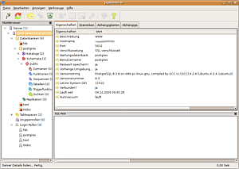
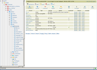

PostgreSQL
Dieser Artikel wurde für die folgenden Ubuntu-Versionen getestet:
Ubuntu 14.04 Trusty Tahr
Zum Verständnis dieses Artikels sind folgende Seiten hilfreich:
PostgreSQL  nennt sich selbst "The world's most advanced open source database". PostgreSQL ist für Linux, aber auch für alle anderen, gängigen Betriebssysteme wie MacOS, Windows und BSD verfügbar.
nennt sich selbst "The world's most advanced open source database". PostgreSQL ist für Linux, aber auch für alle anderen, gängigen Betriebssysteme wie MacOS, Windows und BSD verfügbar.
PostgreSQL setzt den SQL Standard 2008 sehr umfassend um. Neben den gängigen Datentypen kann die Datenbank auch nativ mit XML umgehen und ab Version 9.2 auch mit Daten im JSON-Format.
Einige Eckdaten für Datenbanken innerhalb von PostgreSQL sind in der folgenden Tabelle aufgeführt:
| PostgreSQL Datenbanken | |
| Bereich | Begrenzung |
| Maximale Datenbankgröße | Unendlich (begrenzt nur durch das Dateisystem/Plattenplatz) |
| Maximale Tabellengröße | 32 TiB |
| Maximale Zeilengröße | 400 GiB |
| Maximale Feldgröße | 1 GiB |
| Maximale Zeilen pro Tabelle | Unendlich |
| Maximale Spalten pro Tabelle | 250 - 1600, abhängig vom Spaltentyp |
| Maximale Indices pro Tabelle | Unendlich |
Installation¶
Datenbankserver¶
PostgreSQL wird durch folgendes Paket installiert [1]:
postgresql
 mit apturl
mit apturl
Paketliste zum Kopieren:
sudo apt-get install postgresql
sudo aptitude install postgresql
Dieses Paket installiert die neueste verfügbare Version von PostgreSQL aus den offiziell unterstützten Paketquellen (main).
Datenbankclient¶
Es ist natürlich nicht notwendig auf einem Client, also auf einem Rechner der nur auf die Datenbank zugreifen möchte, auch die Datenbank installiert zu haben, daher genügt es hier folgendes Paket zu installieren [1]:
postgresql-client
mit apturl
Paketliste zum Kopieren:
sudo apt-get install postgresql-client
sudo aptitude install postgresql-client
Konfiguration¶
Hinweis:
Dieser Artikel geht davon aus, dass Version 9.1 der PostgreSQL Datenbank installiert ist. Sollte eine andere Version installiert sein, ist das kein Problem, man muss nur in Pfadangaben/Befehlen immer 9.1 durch die installierte Version (z.B. 9.3) ersetzten.
Admin-Passwort einrichten¶
PostgreSQL wird unter Ubuntu von einem Systembenutzer postgres verwaltet, dieser hat alle Rechte um z.B. Datenbanken oder auch Datenbankbenutzer anzulegen. Es gilt zu beachten, dass Datenbankbenutzer und Systembenutzer in der Regel in keinem Zusammenhang stehen.
Daher ist es zunächst ratsam dem Datenbankbenutzer postgres ein Passwort zu geben, so das man sich mit diesem auch über das Netzwerk anmelden kann. Hierzu öffnet man ein Terminal [2] und führt folgende Befehle aus [4]:
sudo -u postgres psql
Man befindet sich nun in der Umgebung von PostgreSQL (erkennbar an postgres=#). Als nächsten Befehl gibt man
\password postgres
ein. Nun wird man zur Eingabe des neues Passwortes aufgefordert.
Um die Postgre-Umgebung wieder zu verlassen, einfach
\q
eingeben.
Netzwerkzugriff ermöglichen¶
PostgreSQL akzeptiert nach der Installation keine Verbindungen von anderen Computern. Um sich über das Netzwerk auf PostgreSQL anmelden zu können, muss in der Datei /etc/postgresql/9.1/main/postgresql.conf das Listen (Horchen) auf allen Netzwerkkarten erlaubt werden[3].
listen_addresses = '*'
Achtung!
Man sollte prüfen ob dies wirklich erforderlich ist! Denn in der Regel sollte es reichen wenn PostgreSQL auf der Netzwerkschnittstelle lauscht auf der auch die Datenbankanwendungen auf diese zugreifen. Insbesondere ohne SSL-Verschlüsselung kann sonst viel Unfug mit der Datenbank angestellt werden!
Authentifizierung¶
In der Datei /etc/postgresql/9.1/main/pg_hba.conf erfolgt die Konfiguration, wer auf welche Datenbank darf und welche Methoden (Verschlüsselung,Passwort) dafür erforderlich sind [3]. Zeilen in dieser Datei welche mit einem #-Zeichen anfangen sind Kommentare und werden von PostgreSQL nicht beachtet!
Eine gültige Zeile in dieser Datei hat folgendes Format:
Typ Datenbank Benutzer Adressen Methode
Folgende Werte sind für das Feld Typ möglich:
localwird für Unix Domain Sockets (nur lokal möglich) verwendethostwird für unverschlüsselte TCP/IP Verbindungen verwendethostsslwird für SSL verschlüsselte TCP/IP Verbindungen verwendet
Das Feld Datenbank sollte entweder auf all (Zugriff auf alle Datenbanken) stehen oder den Namen einer vorhandenen Datenbank enthalten. Beim Feld Benutzer verhält es sich Analog, auch hier steht all für alle möglichen Benutzer.
Das Feld Adressen darf bei dem Typ local nicht gesetzt werden, bei allen anderen Varianten ist es aber zwingend notwendig. In der Regel wird man hier eine CIDR-konforme Adresse eintragen, hier ein paar Beispiele:
192.168.1.0/24 würde alle Adressen aus dem Subnet 192.168.1.0 erlauben
127.0.0.1/32 würde nur Verbindungen von localhost (127.0.0.1) erlauben
0.0.0.0/0 würde Verbindungen von überall erlauben
Das Feld Methode sollte in der Regel auf md5 stehen, andere Möglichkeiten sind der PostgreSQL-Dokumentation erklärt.
Eine gültige Zeile welche dem Benutzer max Zugriff auf die Datenbank buchhaltung nur über SSL verschlüsselte Verbindungen aus dem Subnet 10.0.0.0/8 erlaubt würde demnach so aussehen:
hostssl buchhaltung max 10.0.0.0/8 md5
Nach Änderungen an der PostgreSQL-Konfiguration muss der Server neu geladen werden.
Administration¶
Datenbankbenutzer anlegen oder löschen¶
Damit man sich (mit der Standardauthentifizierung) an der Datenbank anmelden kann, ist es nicht ratsam den Datenbanksuperuser (postgres) zu verwenden. Es ist daher ratsam einen extra Benutzer hierfür anzulegen, dies ist mit folgendem Befehl möglich:
sudo -u postgres createuser -P -d nutzername
Hinweis:
Das -P als Schalter für createuser ist erforderlich da PostgreSQL sonst nicht nach einem Passwort für den neuen Benutzer fragen würde.
Das -d als Schalter für createuser ist erforderlich wenn der user Datenbanken anlegen können soll.
Siehe auch http://www.postgresql.org/docs/current/static/app-createuser.html
Das Löschen eines Datenbankbenutzers geht mit nachfolgendem Kommando:
sudo -u postgres dropuser nutzername
Datenbanken anlegen oder löschen¶
Für jede Anwendung die man benötigt ist in der Regel eine eigene Datenbank erforderlich, diese kann in einem Terminal [2] wie folgt angelegt werden:
sudo -u postgres createdb -O nutzername datenbank
Dieser Befehl würde die Datenbank datenbank mit dem Eigentümer nutzername anlegen.
Eine Datenbank kann mit folgendem Befehl wieder gelöscht werden:
sudo -u postgres dropdb datenbank
Steuern des PostgreSQL-Dienstes¶
PostgreSQL bringt natürlich auch die üblichen Start/Stop-Skripte mit. Aus einem Terminal heraus kann man den Server mit verschiedenen Befehlen [3] steuern:
# Allgemein sudo /etc/init.d/postgresql (start|stop|restart|reload|force-reload|status) # Beispiel sudo /etc/init.d/postgresql reload
Die Optionen bedeuten:
start- Startet den PostgreSQL-Server.stop- Stoppt den Server.restart- Startet den Server neu, bestehende Verbindungen auf den Server werden getrennt.reload- Lädt die Konfigurationsdateien neu, es gehen keine Verbindungen verloren.force-reload- Lädt die Konfigurationsdateien neu, es können dabei Verbindungen verloren gehen.status- Zeigt den Status des PostgreSQL-Servers an.
Mehr Informationen dazu findet man unter Dienste im Wiki.
pgAdmin III¶
 Das offizielle grafische Administrationswerkzeug von PostgreSQL trägt den Namen pgAdmin III (die römische Zahl gehört nicht zur offiziellen Versionsnummer) und befindet sich im Paket pgadmin3 [1].
pgadmin3 (universe)
mit apturl
Paketliste zum Kopieren:
sudo apt-get install pgadmin3
sudo aptitude install pgadmin3
Folgende Funktionen bietet pgAdmin III:
Anlegen von Datenbanken, Benutzern, Rollen
Vergabe von Zugriffsrechten
Abfragen diverse Informationen vom PostgreSQL Server
Eingebaute Dokumentation zu PostgreSQL
Syntaxhervorhebung
Es ist zu beachten, dass immer nur die Funktionen zu Verfügung stehen die der angemeldete Datenbankbenutzer auch ausführen darf.
Hinweis:
Um über das Netzwerk eine Datenbank zu administrieren, ist es erforderlich die unter Netzwerkzugriff ermöglichen beschriebenen Schritte durchzuführen!
phpPgAdmin¶

phpPgAdmin ist eine freie PHP-Applikation zur Administration von PostgreSQL-Datenbanken ähnlich wie phpMyAdmin für MySQL. Die Administration erfolgt über die Web-Oberfläche eines Browsers. Voraussetzung für die Verwendung von phpPgAdmin ist, dass ein Webserver mit PHP auf demselben System installiert und aktiv ist.
Für phpPgAdmin muss das folgende Paket installiert [1] werden:
phppgadmin (universe)
mit apturl
Paketliste zum Kopieren:
sudo apt-get install phppgadmin
sudo aptitude install phppgadmin
Bis Ubuntu 14.10 muss die Datei /etc/apache2/apache2.conf um eine Zeile ergänzt und dann service apache2 reload ausgeführt werden.
Für Ubuntu 14.04: Include /etc/apache2/conf.d/phppgadmin
Ab Ubuntu 15.04 muss der Befehl a2enconf phppgadmin und danach service apache2 reload ausgeführt werden.
Auf http://localhost/phppgadmin ist nun phppgadmin verfügbar.
Datensicherung¶
Hinweis:
Es gilt zu beachten, dass eine Datensicherung immer geprüft wird, dies gilt unabhängig von der eingesetzten Datenbank! Auch sollten die Programme, die zu Datensicherung verwendet werden, immer in einer Version sein, die gleich oder neuer als die der installierten Datenbank ist.
Insbesondere ein "downgrade", also das Wiederherstellen einer Dateisicherung auf einem Datenbankserver in einer kleineren Version wird nicht empfohlen!
Datensicherung erstellen¶
Um seine Daten zu sichern oder auf einen anderen Rechner zu kopieren ist eine Datensicherung erforderlich. Auch beim Upgrade von z.b. PostgreSQL 9.1 auf 9.3 ist dies erforderlich!
Eine einzelne Datenbank (datenbank) kann mit dem Befehl pg_dump gesichert werden, dabei werden (bis auf wenige Ausnahmen, die nur in Sonderfällen benötigt werden) alle Daten gesichert.
sudo -u postgres pg_dump --format=custom --dbname=datenbank --file=datenbank.dump
Um alle im System vorhandenen Datenbanken (inkl. Systemtabellen, Benutzer, Zugriffsrechte, usw …) zu sichern, dient der Befehl pg_dumpall, Beispiel:
sudo -u postgres pg_dumpall > alle-datenbanken.dump
Datensicherung wiederherstellen¶
Eine einzelne Datenbank aus der Datensicherung datenbank.dump kann in die Datenbank mit dem Namen datenbank wie folgt wiederhergestellt werden:
sudo -u postgres pg_restore -d datenbank datenbank.dump
Um eine vollständige Datensicherung aller Datenbanken wiederherzustellen, die sich in der Datei alle-datenbanken.dump befindet, ist folgender Befehl notwendig:
sudo -u postgres psql -f alle-datenbanken.dump postgres

- Erstellt mit Inyoka
-
 2004 – 2017 ubuntuusers.de • Einige Rechte vorbehalten
2004 – 2017 ubuntuusers.de • Einige Rechte vorbehalten
Lizenz • Kontakt • Datenschutz • Impressum • Serverstatus -
Serverhousing gespendet von